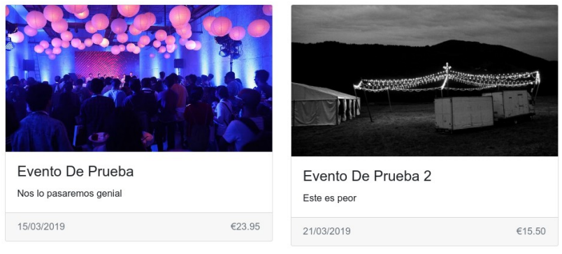

2.3.1 ✍️ Proyecto: Angular Events. Parte 2.
Partiendo del proyecto creado en la actividad anterior Angular Events. Parte 1. Vamos a continuar creando la aplicación de gestión de eventos.
Cuando termines, en el commit debes incluir el mensaje: v2.0.0.
1. Añadir imágenes a los eventos
Vamos a mostrar imágenes con los eventos. En este caso podéis descargar las imágenes que se proporcionan o usar las que queráis. En cualquier caso debéis situarlas dentro de la carpeta public/assets, y referenciarlas en los objetos de los eventos.
{kind=link}
{kind=link}
eventos: Evento[] = [{
...
image: 'assets/evento1.jpg',
...
}, {
...
image: 'assets/evento2.jpg',
...
}];
Posteriormente, hay que mostrar la imagen en la plantilla HTML. Para ello situamos el elemento <img> correspondiente dentro del componentes de <mat-card>. Referencia: https://material.angular.dev/components/card/overview
Se debe vincular el atributo src de la imagen a la propiedad evento.image del objeto correspondiente.
Además hay que filtrar el título del evento con el filtro titlecase (pone la primera letra de cada palabra en mayúscula), para poder usarlo deberás importar el filtro predefinido TitleCasePipe del módulo @angular/common.
El precio se mostrará con el símbolo del euro mediante un filtro (ver ejemplo en apuntes) y la fecha en formato dd/MM/y (ver ejemplo en apuntes).
Debes conseguir un aspecto similar a la siguiente captura:

2. Filtrar y ordenar eventos
Vamos a introducir una barra de búsqueda (igual que en el ejemplo de los apuntes) para filtrar los eventos por título. Crea un filtro (pipe) personalizado llamado evento-filter. Recibirá el array de eventos (Evento[]) y una cadena de búsqueda (string), y devolverá los eventos que contengan la cadena en su título (podéis incluir también la búsqueda en la descripción).
Además, vamos a crear 2 enlaces para ordenar los eventos por fecha o por precio. Al hacer clic sobre estos enlaces se llamará a un método del componente, que borrará el filtro actual de búsqueda (ponemos la variable a cadena vacía '') y ordenará el array en base a la fecha o al precio. Para ordenar por fecha, al estar almacenada como cadena en formato yyyy-mm-dd, puedes ordenar alfabéticamente.
Importante
Si reordenas el array sin borrar el filtro verás como no funciona.
Esto pasa porque los pipes en Angular, no detectan los cambios internos en el objeto a filtrar (array de eventos en este caso) para optimizar el rendimiento, por lo que no se volvería a ejecutar el filtrado y no se actualizaría la vista.
Para forzar los cambios debemos generar un nuevo array. Esto es sencillo utilizando el operador spread ‘...’ de JavaScript.
Cuando no hay filtro siempre funcionaría porque se devuelve el array original (@for sí detecta cambios internos) y no el array previamente filtrado por el pipe.
Este es el HTML a añadir para mostrar tanto el campo de búsqueda como los 2 enlaces:
<nav class="navbar navbar-light bg-light justify-content-between mt-3">
<div class="container-fluid">
<ul class="nav">
<li class="nav-item">
<a class="nav-link"
href="#"
(click)="orderDate()">Orden por fecha</a>
</li>
<li class="nav-item">
<a class="nav-link"
href="#"
(click)="orderPrice()">Orden por precio</a>
</li>
</ul>
<form class="d-flex mb-0">
<input class="form-control me-2"
type="text"
[(ngModel)]="search"
name="search"
placeholder="Search"
aria-label="Search">
</form>
</div>
</nav>
<div class="mb-4 row row-cols-1 row-cols-md-2 row-cols-xl-3 g-4">
<!-- (Aquí es donde se listan los eventos) -->
</div>
¡No olvides importar el módulo FormsModule en el componente!